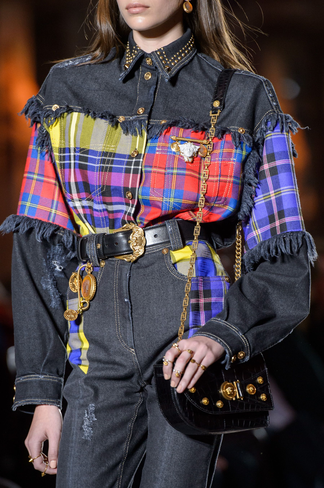
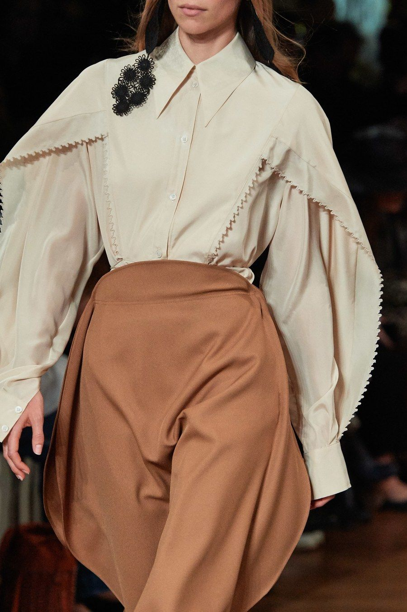
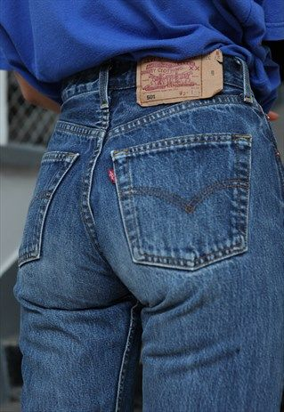

Well known desingners promote the idea of bringing back to life old items by giving them a new and unique look.
Designer Stella McCartney's Spring 2020 is her most sustainably made collection yet, with more than 75
percent of materials being eco-friendly.

Versace Fall 2018 runway
Stella McCartney Spring 2020
A movement that goes beyond environmentalism
"Slow fashion" movement is gathering more and more advocates who happen to have a common cause - moving fashion forward.
6 basic principles of "Slow Fashion"
- need vs. want
- quality vs. quantity
- trends vs. personal style
- give old clothes a new purpose
- support ethical brands
- be creative
I think we can all agree that fashion trends quickly lose their initial appeal after enough of people jump on the same-style bandwagon. After all, who wants to be just another face in the crowd?
| Country | Textile waste(kg) | Incinerated/to landfill | Recycled |
|---|---|---|---|
| Italy | 465,925 | 81,8% | 10.4% |
| Portugal | 181,715 | 82,5% | 10% |
| Austria | 62,446 | 81,4% | 10% |
| United Kingdom | 206,456 | 80,6% | 9,6% |
Levi’s is known for being the face of denim. And the brand has always been an example of change and progress:
The brand adopts eco-friendly and sustainable practices like recyclable denim, ethically sourced cotton,
and innovations to reduce water use, in addition to giving back to its workers and community organizations alike.
Vintage pair of Levi's jeans
Mass-market brands are joining the movement
Fashion sells a fantasy, an idea of glamour, but there is nothing glamorous about exploitation. No matter how beautiful the clothes, I don’t believe a company can truly be modern or relevant if they don’t take on the responsibility of ensuring adequate conditions for the people making the product.
Eliana Gil Rodriguez, Creative Director of same name line of sleek basics